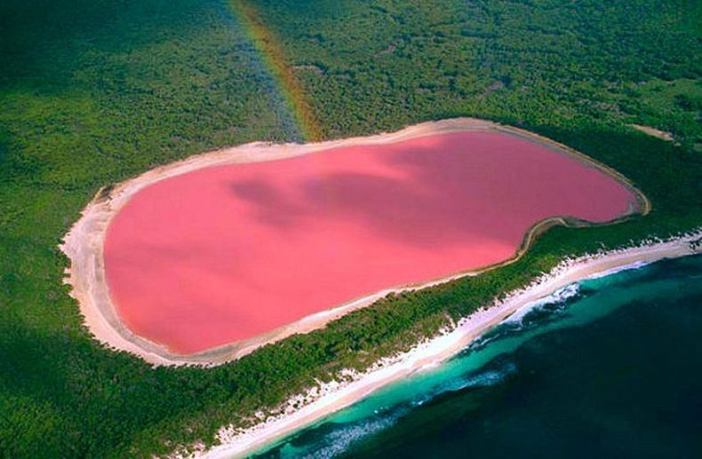
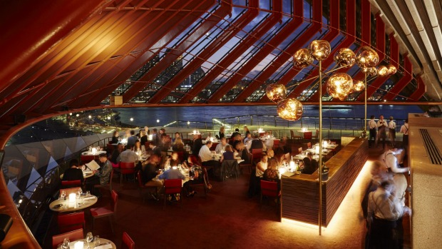

Tourist Attractions

Fine Dining
Mosques, Synagogues, and Churches
Lodging

First and foremost, you need to know the climate of Tasmania and when is best time of year to travel. Tasmania is best known for its four distinst seasons. This climate is perfect for outdoor activites and enterntainment. Hottest and warmest part of the year is between December to March. Summer months are between December to February. Winter months are from June to August and Spring months are from September to November. All in all, it depends on what activites you plan on participatiing in and then you can decide when to go.
TThe weather is important to know, but these tips you need to be aware of before and while traveling. These are: Australians drive on the left side, wear sun protective clothing, sunblock, large rim hats, sunglasses to block UV light, check on immunization shots, take out traveler's insurance, you may observe and study the wildlife, but always respect their space, have fun, but be safe and aware of your surroundings, have caution on beaches of rip and undercurrents, watch out for natural hazards & extreme weather conditions, leave copies of credit card details, personal travel info, & your itinery information with someone at home, keep in contact with family and friends, research if dual nationality will affect your travels, in case of emergency dial 000, and don't take anything or follow strangers.
Saftey TIPS and Important Information About Sydney